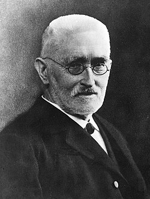

1831-1916
Richard Dedekind

Portrait: Unknown (Mondadori Publishers), Public domain, Wikimedia Commons.
Events (9)
- 370 BCEEudoxus: theory of proportion and method of exhaustion
popularizer · Analysis
- 1847Ideals and algebraic number theory
developer · Number theory
- 1869Arithmetization of analysis and the construction of the real numbers
developer · Logic & foundations
- 1874Cantor's set theory
developer · Logic & foundations
- 1884Logicism: reducing arithmetic to logic
developer · Logic & foundations
- 1888Peano arithmetic axioms
systematiser · Logic & foundations
- 1890Commutative algebra from invariant theory and ideals
developer · Algebra
- 1893Abstract (axiomatic) rings and fields
originator · Algebra
- 1939Weil's dictionary: number fields, function fields, Riemann surfaces
developer · Number theory